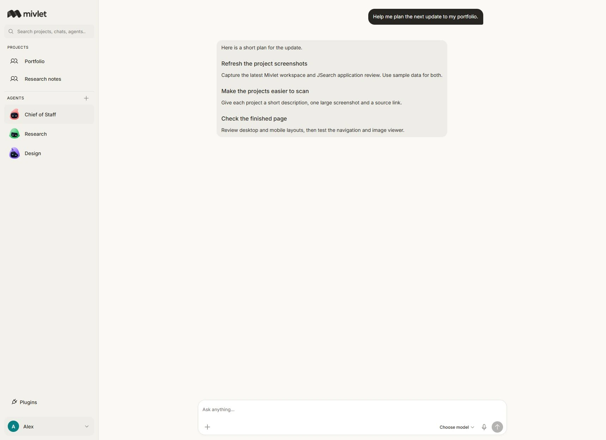
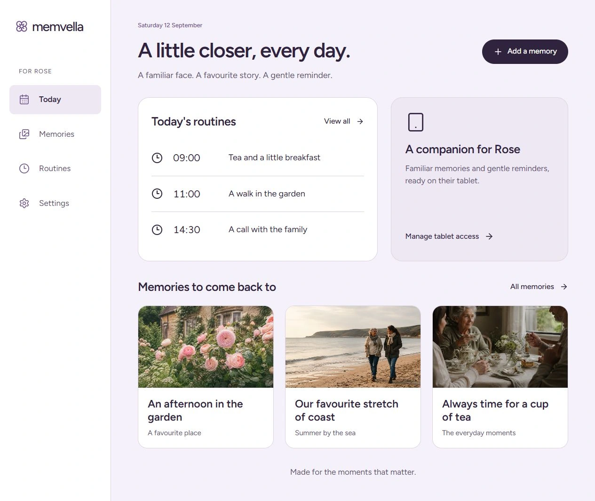
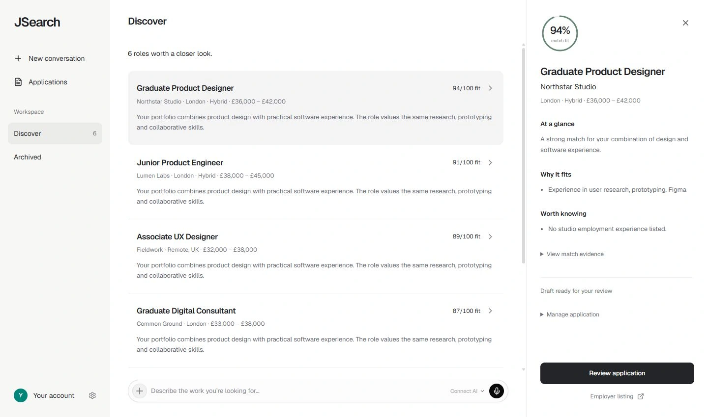
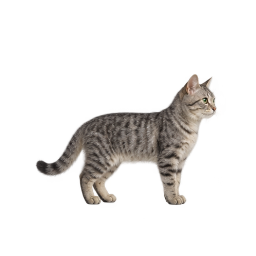
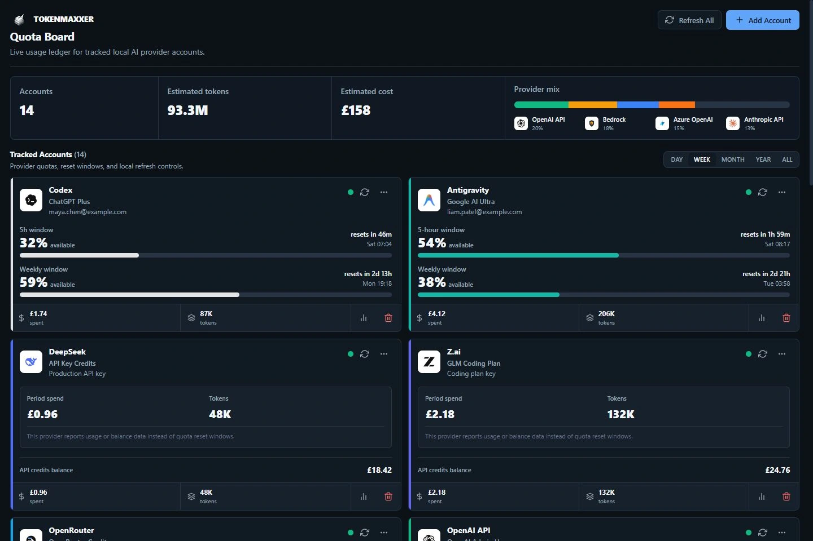
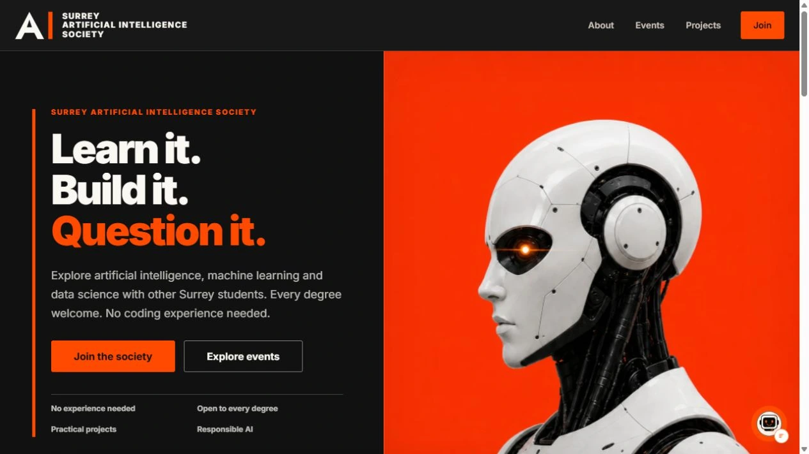

Mivlet
A desktop workspace for AI agents
Conversations, files and tools in one desktop app. Choose your models, connect apps, and manage what each agent can access.

I’m developing Mivlet, an AI workspace, and Memvella, a memory and routine companion backed by £1,500 in Surrey enterprise funding.
View projectsConversations, files and tools in one desktop app. Choose your models, connect apps, and manage what each agent can access.

A family workspace and companion-tablet app for older people, with shared memories, daily routines and voice interaction. I secured £500 from Surrey’s Propeller Fund and £1,000 from the Cube Fund through competitive pitches.

One workspace to discover roles, understand the fit, prepare applications and keep track of what happens next. AI helps with the preparation; you review the details and decide what gets sent.

An animated desktop pet for Windows, with six animal characters that walk, rest and react on your screen.
Explore Mote
Cat · Artwork from Mote’s native renderer
A local dashboard for AI subscriptions and API usage. See account limits, reset times and balances together, without having to open every provider’s website.

Websites for Surrey’s AI, Business and Neurotech societies. Distinct identities, clear ways to get involved, and a shared foundation for events, projects and membership.

I combine product development with student leadership at the University of Surrey, where I’m in my final year of Politics and International Relations.
I work across design and engineering, using React, TypeScript, Tauri and Rust for desktop software, and Next.js and Convex for web applications. Beyond the code, I pitch for funding, develop university partnerships and lead student teams.
May 2026 – present
Created the society’s website, branding, launch content and development plan for 2026/27.
May 2026 – present
Built the society website and prepared its development plan for 2026/27.
October 2025 – May 2026
Led 330+ members and a ten-person committee, overseeing events, communications and partnerships with Surrey Business School and the Students’ Union. Previously Vice President.
University of Surrey · 2024–2027 (expected)